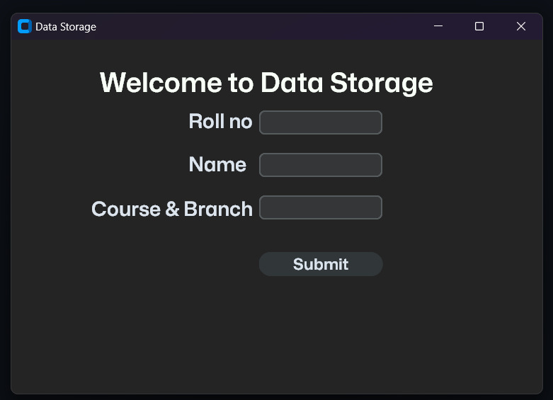

A sophisticated data management solution that combines elegant design with robust functionality. Built with CustomTkinter, this application revolutionizes student record management through its intuitive interface and powerful features.
Embracing minimalist design principles, the interface features a sophisticated dark theme complemented by smooth, rounded elements. The system prioritizes both aesthetics and functionality, making it an ideal solution for modern educational institutions.